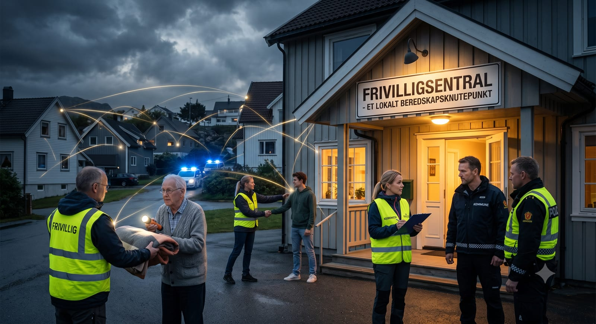
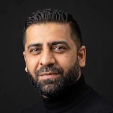
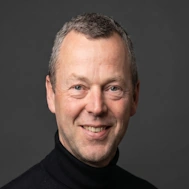
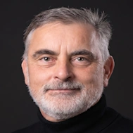
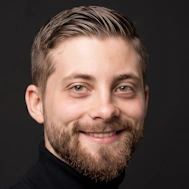
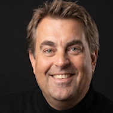
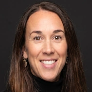

Når krisen rammer, blir lokalsamfunnet en del av beredskapen
Kommunene har beredskapsansvaret, og nødetatene har sine tydelige roller. Men når en krise rammer, blir også lokal kunnskap, tillit og evnen til å mobilisere mennesker avgjørende. Under Arendalsuka spør vi hvilken rolle frivilligsentralene kan ta i denne beredskapen.
Når strømmen forsvinner, mobilnettet svikter eller mange mennesker trenger hjelp samtidig, må informasjon og støtte nå helt ut i lokalsamfunnene. Da er det en styrke å kjenne nærmiljøet, vite hvor mennesker møtes og ha etablerte relasjoner til både innbyggere, frivillige og kommunen.
Dette er nettopp noe av det frivilligsentralene arbeider med hver dag.
En lokal ressurs som allerede finnes
Frivilligsentralene finnes i kommuner over hele landet. De er lokale møteplasser, men også knutepunkter for engasjement, samarbeid og mobilisering. Sentralene kjenner nærmiljøene og har kontakt med mennesker som ikke alltid nås gjennom kommunens ordinære informasjonskanaler.
I en beredskapssituasjon kan denne nærheten få stor betydning. Frivilligsentralene kan blant annet bidra med lokale møteplasser, formidling av kvalitetssikret informasjon, opplærte frivillige, kontakt med innbyggere som kan trenge ekstra støtte og mottak og koordinering av mennesker som spontant ønsker å hjelpe.
Men dette kan ikke improviseres når krisen allerede har oppstått.
Skal frivilligsentralene være en reell beredskapsressurs, må roller, ansvar og samarbeidsformer avklares på forhånd. Det krever avtaler, opplæring, øvelser og forutsigbare rammer.
Et supplement – ikke en erstatning
Frivilligsentralene skal ikke overta kommunenes eller nødetatenes ansvar. De kan heller ikke erstatte de etablerte beredskapsorganisasjonene.
Spørsmålet er hvordan de kan supplere den offentlige beredskapen med det de kjenner best: mennesker, møteplasser, lokale nettverk og organisering av frivillig innsats.
Hvordan kan kommunene bruke denne ressursen på en trygg og systematisk måte? Hvilke oppgaver er frivilligsentralene egnet til å løse? Hva må være på plass før samarbeidet kan inngå i kommunenes beredskapsplaner? Og hvilke politiske og økonomiske rammevilkår trengs?
Dette er spørsmål vi ønsker å løfte under Arendalsuka.
Fagfolk, politikere og frivilligsentraler møtes
Til samtalen kommer representanter fra kommunal beredskap, lokal- og regionalpolitikken og frivilligsentralsektoren:

Osman Ibrahim
Avdelingssjef i Beredskapsetaten, Oslo kommune

Jarle Bø
Ordfører i Randaberg

Svein Erik Indbjo
Fylkesvaraordfører i Rogaland

Robert Raustein
Styreleder i Rogalands Frivilligsentraler

Espen Watne Andresen
Styreleder i Oslo Frivilligsentraler

Mari Wigaard
Oslo Frivilligsentraler
Målet er ikke bare å beskrive potensialet. Vi ønsker en konkret og løsningsorientert samtale om hva som skal til for å gå fra gode intensjoner til samarbeid som faktisk virker når det haster.
Velkommen til frokost og samtale
Arrangementet er åpent for alle. Vi håper særlig å møte politikere, ansatte med ansvar for samfunnssikkerhet og beredskap, kommuneledere og representanter for frivilligheten.
Sted: Frivillighetsteltet, Jaktekaia
Dato: Onsdag 12. august
Frokost: Fra kl. 07.30
Samtalen starter: Kl. 08.00
Åpne kart og veibeskrivelse i Google Maps.
Velkommen til en viktig samtale om hvordan vi kan styrke totalberedskapen nedenfra – i byer, bygder og nabolag over hele landet.